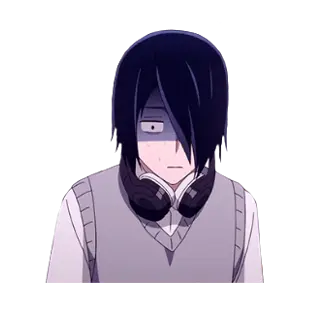

kaguya Shinomiya
El personaje principal de la serie, Kaguya es la vicepresidenta del consejo estudiantil de la Academia Shuchiin. Ella tiene el pelo negro y ojos rubí. Ella es una chica hermosa, inteligente y rica, y su familia es dueña de uno de los conglomerados de negocios más grandes de Japón.
Miyuki Shirogane
Miyuki es el presidente del consejo estudiantil de la Academia Shuchiin. Es el mejor alumno de la escuela que también ha obtenido el segundo lugar en general en los exámenes de simulación nacionales, en gran parte a través del estudio todo el tiempo.
Chika Fujiwara
Chika es la secretaria del consejo estudiantil de la Academia Shuchiin. Es una chica muy alegre y amigable, de piel clara, cabello plateado que llega hasta los hombros (rosa en la adaptación al anime), ojos azules y lleva un lazo negro en su flequillo.

Yū Ishigami
Yu es el tesorero del consejo estudiantil de la Academia Shuchiin y un kohai para los otros miembros. Es un chico de cabello oscuro con un corte de pelo Emo con flequillo que cubre uno de sus ojos